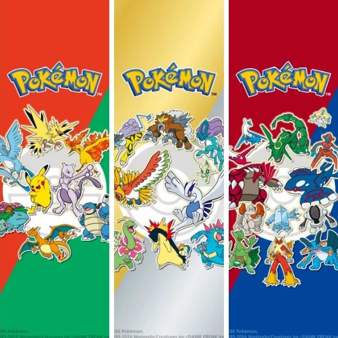
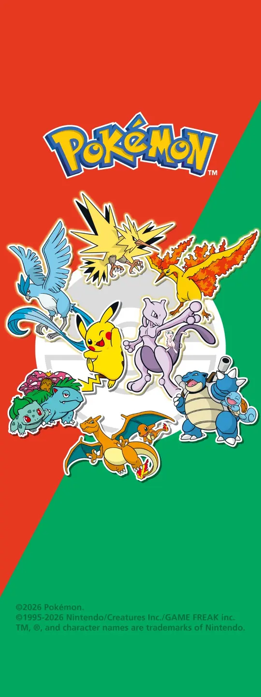
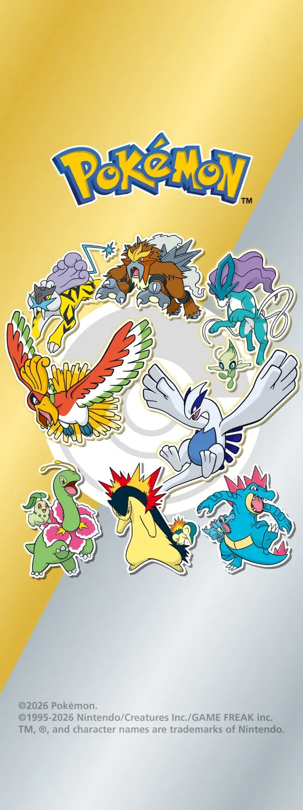
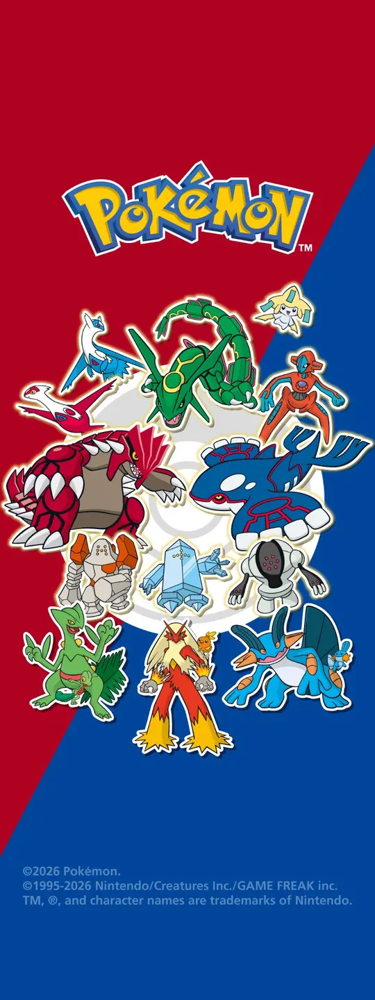
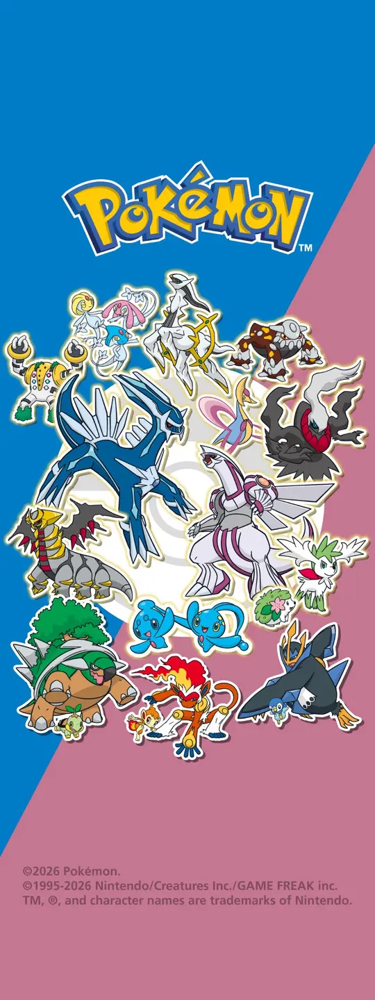
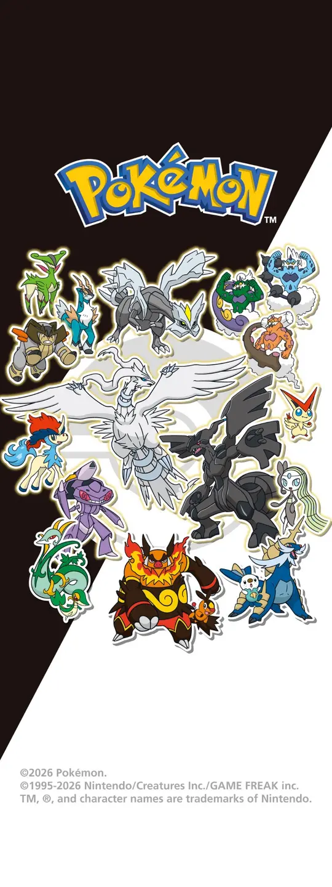
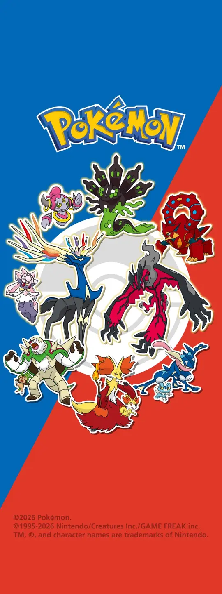
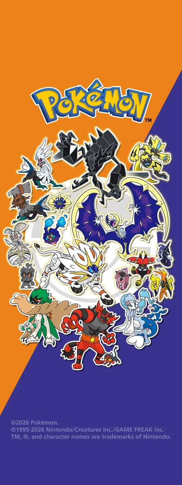
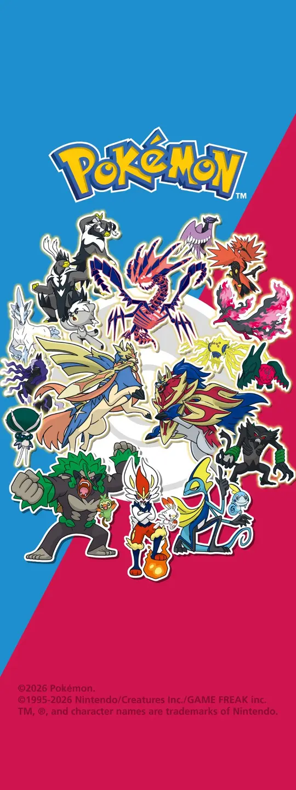
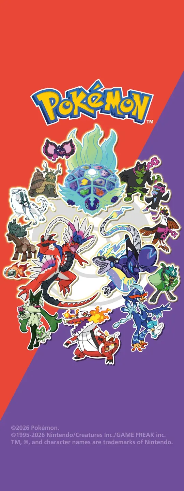

商品目錄色違、極巨化、限定背景，挑好加入清單逛商品 → 背景圖鑑歷年地點與特殊背景，9 種語言可查查背景 →
世界地圖按城市找活動與限定背景看地圖 →
背景圖鑑歷年地點與特殊背景，9 種語言可查查背景 →
世界地圖按城市找活動與限定背景看地圖 →

商品目錄色違、極巨化、限定背景，挑好加入清單逛商品 →背景圖鑑歷年地點與特殊背景，9 種語言可查查背景 →
世界地圖按城市找活動與限定背景看地圖 →
正在載入活動…
點選地區瀏覽完整原圖








